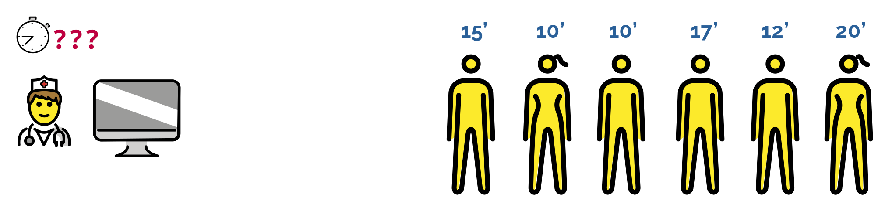
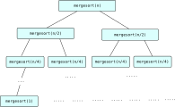
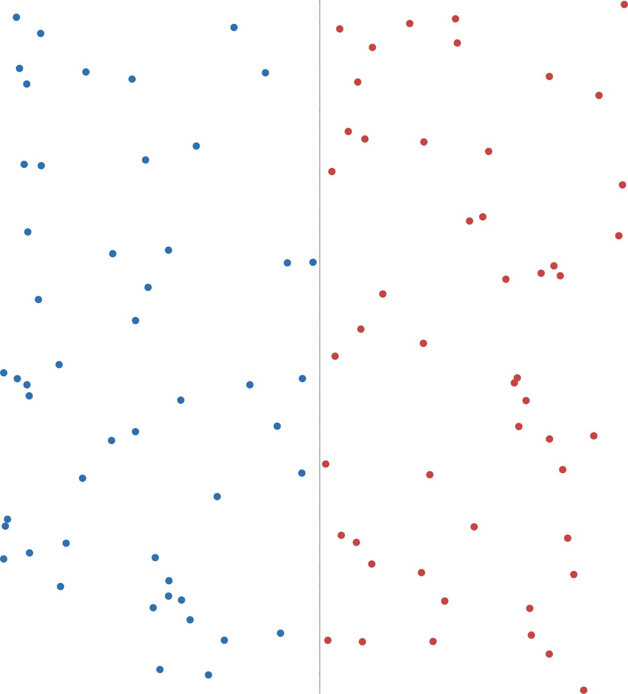
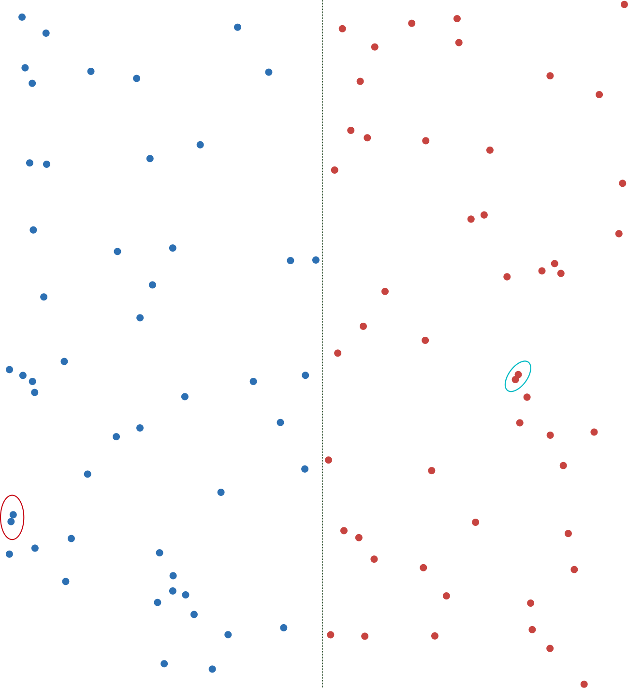
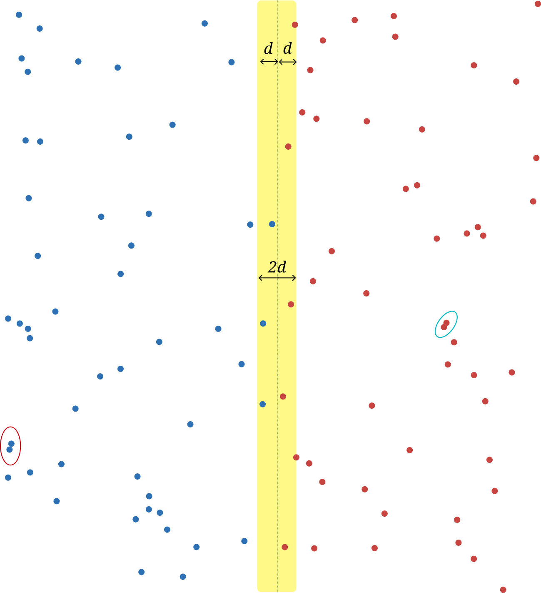
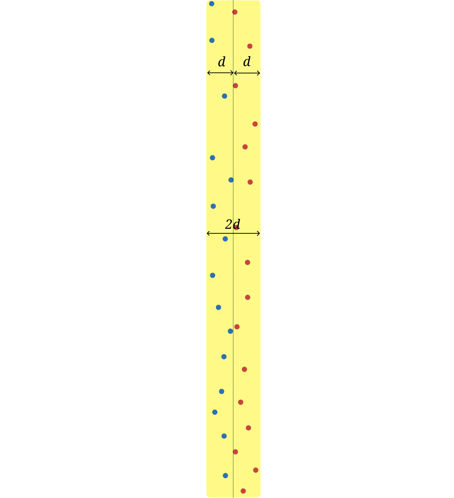
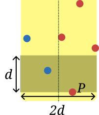

Tema 4
Es una técnica algorítmica que consiste en resolver un problema mediante su descomposición en problemas más pequeños, pero del mismo tipo.
Las soluciones de cada subproblema se combinan para construir una solución al problema original.
method divideYVencerás(x̅:
problema) returns (y̅:
solución)
decreases
tamaño(x̅)
{
if casoSencillo(x̅) {
y̅ :=
metodoDirecto(x̅);
} else {
x̅1,
…, x̅n := descomponer(x̅); Descomposición del problema
original
y̅1 :=
divideYVencerás(x̅1); Resolución de
subproblemas
…
y̅n :=
divideYVencerás(x̅n);
y̅ := combinar(x̅,
y̅1, …, y̅n) Combinación de
resultados
}
}
| 4 | -3 | 1 | 7 | -5 | 2 | 5 |
División en subproblemas
| 4 | -3 | 1 | 7 |
| -5 | 2 | 5 |
Resolución recursiva
Combinar soluciones
| 4 |
Método directo
Cabecera de la función:
int maximo(const vector<int> &v);
Añadimos parámetros de inmersión que delimitan el segmento
v[c..f) del vector sobre el cual calcular el máximo:
int maximo(const
vector<int>
&v, int c, int
f) {
assert (0 <= c && f
<= n && f - c >= 1); // Precondición:
segmento no vacío
if (f - c == 1) { // Caso base:
segmento unitario
return v[c];
}
else { // Caso
recursivo
int m = (c + f) /
2;
int max1
= maximo(v, c, m);
int max2 = maximo(v,
m, f);
return max(max1, max2);
}
}
Si \(m\) denota la diferencia f - c:
\[ T(m) = \begin{cases} k_1 & \text{si } m = 1 \\ 2T\left(\frac{m}{2}\right) + k_2 & \text{si } m > 1 \\ \end{cases} \]
Utilizando la regla de la división: \(a = 2\), \(b = 2\), \(d = 0\). Por tanto, \(a > b^d\):
\[ T(m) \in \Theta(m^{\log_2 2}) = \Theta(m) = \Theta(\texttt{f} - \texttt{c}) \]
int maximo(const
vector<int>
&v) {
return maximo(v, 0, v.size());
}
Coste: \(\Theta(\texttt{f} - \texttt{c}) = \Theta(n - 0) = \Theta(n)\), donde \(n = \texttt{v.size()}\).
Elementos de tipo T, en lugar de tipo
int:
template <typename T>
T
maximo(const vector<T> &v,
int c, int f)
{
if (c + 1 == f)
{
return v[c];
} else
{
int m = (c + f) / 2;
T max1 = maximo(v, c, m);
T
max2 = maximo(v, m, f);
return max(max1,
max2);
}
}
template
<typename T>
T maximo(const vector<T> &v)
{
return maximo(v, 0,
v.size());
}
cout << maximo<int>({4, 5, 1, 3, -3, 6}); // Imprime: 6
Suponemos un vector V[0..n) ordenado de manera ascendente.
Queremos una función que, dado un elemento
x, devuelva la posición de ese elemento en el vector.
Si el elemento a buscar no aparece en el vector, la función devuelve la posición en la que estaría si se insertase, de modo que el vector siguiese estando ordenado.
Si x == 4, devuelve 2.
Si x == 14, devuelve 4.
Si x == 10, devuelve 4.
Si x == 25, devuelve 7.
Si x == -10, devuelve 0.
method Busqueda(V[0..n):
array<int>,
x: int)
returns (k: int)
requires n >= 0 \({\wedge}\) (\(\forall\)i, j :
0 <= i <= j < n : V[i] <=
V[j])
ensures 0 <= k <= n \({\wedge}\)
(\(\forall\)i : 0
<= i < k : V[i] < x) \({\wedge}\)
(\(\forall\)i : k
<= i < n : V[i] >= x)
method BusquedaBinariaGen(V[0..n): array<int>, x: int, c: int, f: int)
returns
(k: int)
requires (\(\forall\)i, j :
0 <= i <= j < n : V[i] <= V[j])
\({\wedge}\) 0 <= c <= f <=
n
ensures c <= k <=
f \({\wedge}\)
(\(\forall\)i : c <= i < k : V[i] < x) \({\wedge}\)
(\(\forall\)i : k
<= i < f : V[i]
>= x)
La función sumergida queda del siguiente modo:
method BusquedaBinaria(V[0..n): array<int>, x: int) returns (k: int)
{
k :=
BusquedaBinariaGen(V, x, 0, n);
}
ensures c <= k <= f \({\wedge}\) (\(\forall\)i : c <= i < k : V[i] < x) \({\wedge}\) (\(\forall\)i : k <= i < f : V[i] >= x)
Cuando c == f, la única posibilidad es
k := c, que satisface la postcondición.
method BusquedaBinariaGen(V[0..n): array<int>, x: int, c: int, f: int) returns (k: int)
requires (\(\forall\)i, j :
0 <= i <= j < n : V[i] <= V[j])
\({\wedge}\) 0 <= c <= f <=
n
ensures c <= k <= f \({\wedge}\) (\(\forall\)i : c
<= i < k : V[i] < x) \({\wedge}\) (\(\forall\)i : k
<= i < f : V[i] >=
x)
{
if c == f then {
k
:= c; Caso base
}
else {
…
}
}
Calculamos el punto intermedio m entre c y
f.
Si V[m] < x, podemos descartar el segmento
V[c..m] del vector.
Si V[m] >= x, podemos descartar el segmento
V[m+1..f) del vector.
method BusquedaBinariaGen(V[0..n): array<int>, x: int, c: int, f: int) returns (k: int)
requires (\(\forall\)i, j :
0 <= i <= j < n : V[i] <= V[j])
\({\wedge}\) 0 <= c <= f <=
n
ensures c <= k <= f \({\wedge}\) (\(\forall\)i : c
<= i < k : V[i] < x) \({\wedge}\) (\(\forall\)i : k
<= i < f : V[i] >=
x)
decreases f - c
{
var
m: int;
if c == f
then {
k := c;
} else
{
m := (c + f) div 2;
if
V[m] < x then {
k := BusquedaBinariaGen(V,
x, m + 1, f);
} else {
k :=
BusquedaBinariaGen(V, x, c, m);
}
}
}
Si \(m\) denota la diferencia
f - c:
\[ T(m) = \begin{cases} k_1 & \text{si } m = 0 \\ T\left(\frac{m}{2}\right) + k_2 & \text{si } m > 0 \end{cases} \qquad \Rightarrow \qquad T(m) \in \Theta(\log~m) \]
Coste en tiempo de
BusquedaBinariaGen:
\[ \Theta(\log(\texttt{f - c})) \]
Coste en tiempo de BusquedaBinaria:
\[ \Theta(\log~\texttt{n}) \]
donde n es el tamaño del vector.
template <typename
T>
int busqueda_binaria(const vector<T>
&v, const T &x, int c, int f)
{
if (c == f) {
return
c;
} else {
int m
= (c + f) / 2;
if
(v[m] < x) {
return busqueda_binaria(v, x,
m + 1, f);
} else
{
return busqueda_binaria(v, x, c,
m);
}
}
}
template <typename T>
int
busqueda_binaria(const vector<T> &v, const T &x) {
return
busqueda_binaria(v, x, 0,
v.size());
}
En una cola de pacientes, conocemos el tiempo que necesita cada paciente en ser atendido.
Tenemos varios médicos. El turno de cada médico dura una cantidad de minutos.
Supongamos que tenemos 3 médicos y que el turno de cada uno de ellos dura 30’.
❌ Un turno de 30’ no es suficiente para atender a todos los pacientes
¿Y si, con la misma cantidad de médicos, la duración del turno fuera de 40’?
✅ Un turno de 40’ sí es suficiente para atender a todos los pacientes

Dado un vector V[0..n) con los tiempos que requieren los pacientes.
Dado un número k de médicos.
¿Cuánto ha de durar, como mínimo, el turno de todos los médicos para que todos los pacientes puedan ser atendidos?
La solución es una cantidad entera de minutos
(un valor de tipo int).
Espacio de soluciones: cualquier número entero entre 20 y 84.
¿Por qué el mínimo es 20? Porque el paciente que más tiempo necesita en ser atendido requiere 20’. Si el turno de cada médico dura menos, ese paciente nunca podrá ser atendido.
¿Por qué el máximo es 84? Porque es la suma de los tiempos que necesita un paciente. Si el turno de un médico durase 84’, él solo podría atender a todos los pacientes.
t minutos, también lo será
uno de mayor duración.t minutos, tampoco lo
será uno de menor duración.Por tanto, el espacio de soluciones tiene esta forma:
Suponemos un predicado sePuede(V[0..n), k, t) que se
evalúe a true si y solo si una duración t de cada turno es suficiente para que
k médicos atiendan a los n pacientes.
Estamos interesados en implementar la siguiente función:
method turnoMinimo(V[0..n): array<int>, k: int) returns (t: int)
requires
…
ensures sePuede(V, k, t) \({\wedge}\) (\(\forall\)t’ : t’
< t : \(\neg\)sePuede(V, k, t’))
sePuedesePuede(V, k, t) ==> (\(\forall\)t’ : t’ > t : sePuede(V, k, t’))
\(\neg\)sePuede(V, k, t) ==> (\(\forall\)t’ : t’ < t : \(\neg\)sePuede(V, k, t’))
Realizamos inmersión con dos parámetros, que determinan los límites del espacio de búsqueda:
method turnoMinimoGen(V[0..n): array<int>, k: int, c:
int, f: int)
returns (t: int)
requires … \({\wedge}\) c <= f \({\wedge}\) sePuede(V, k,
f)
ensures c <= t <=
f \({\wedge}\) sePuede(V, k, t)
\({\wedge}\) (\(\forall\)t’ : c
<= t’ < t : \(\neg\)sePuede(V, k, t’))
La función turnoMinimo se implementa del siguiente
modo:
method turnoMinimo(V[0..n): array<int>, k: int) returns (t: int)
{
var m: int :=
maximo(V);
var s: int := suma(V);
t := turnoMinimoGen(V, k, m,
s);
}
m = punto medio entre
c y f
Caso 1: Es posible atender a
los pacientes en tiempo m. Buscamos en
[c, m].
m. Buscamos en
[m+1, f].
c
method turnoMinimoGen(V[0..n): array<int>, k: int, c: int, f: int) returns (t: int)
requires
…
ensures …
decreases f -
c
{
if c == f {
t := c;
}
else {
var m: int := (c + f)
div 2;
if sePuede(V, k, m)
{
t := turnoMinimoGen(V, k, c, m);
}
else {
t := turnoMinimoGen(V, k, m + 1,
f);
}
}
}
sePuedemethod sePuede(V[0..n):
array<int>,
k: int, t: int)
returns (b: bool)
{
var i: int,
tdisp: int, numMedicos: int;
i := 0; tdisp := t; numMedicos
:= 1;
while i < n {
if
V[i] > tdisp {
numMedicos := numMedicos +
1;
tdisp := t - V[i];
} else
{
tdisp := tdisp -
V[i];
}
i := i + 1;
}
b := (numMedicos <=
k);
}
Coste en tiempo: Θ(n)
turnoMinimoGenSi \(m = \texttt{f} - \texttt{c}\) y \(n\) es la longitud del vector, tenemos:
\[ T(n, m) = \begin{cases} k_1 & \text{si } m = 0 \\ k_2n + T\left(n, \frac{m}{2}\right) & \text{si } m > 0 \\ \end{cases} \]
\[ T(n, m) \in \Theta(n \log m) \]
El coste de la llamada inicial es \(\Theta(n \log M)\), donde \(M\) es la longitud del espacio de soluciones.
\[ M = \left(\sum_{i=0}^{n-1} V[i]\right) - \max \{ V[i] \mid {0 \leq i < n} \} \]
Supongamos que queremos ordenar el siguiente vector:
| 5 | 4 | 2 | 1 | 8 | 3 | 7 | 6 |
Escogemos un elemento arbitrario (por ejemplo, el primero), y lo denominamos pivote:
| pivote | |||||||
|---|---|---|---|---|---|---|---|
| 5 | 4 | 2 | 1 | 8 | 3 | 7 | 6 |
Suponemos que existe un algoritmo de partición que desplaza todos los elementos menores que el pivote a la izquierda de él.
| menores que pivote | pivote | mayores que pivote | |||||
|---|---|---|---|---|---|---|---|
| 4 | 2 | 1 | 3 | 5 | 8 | 7 | 6 |
| menores que pivote | pivote | mayores que pivote | |||||
|---|---|---|---|---|---|---|---|
| 4 | 2 | 1 | 3 | 5 | 8 | 7 | 6 |
Ordenamos (mediante una llamada recursiva) el segmento del vector que está a la izquierda del pivote:
| menores que pivote | pivote | mayores que pivote | |||||
|---|---|---|---|---|---|---|---|
| 1 | 2 | 3 | 4 | 5 | 8 | 7 | 6 |
Ordenamos (mediante una llamada recursiva) el segmento del vector que está a la derecha del pivote:
| menores que pivote | pivote | mayores que pivote | |||||
|---|---|---|---|---|---|---|---|
| 1 | 2 | 3 | 4 | 5 | 6 | 7 | 8 |
El vector queda ordenado.
V[0..p)V[p..q)V[q..n)| 0 | p | q | n |
|---|---|---|---|
| < pivote | = pivote | > pivote |
El algoritmo, además de mover los elementos, devuelve el par
(p, q) con las posiciones que delimitan cada zona.
V[c..f) del vector V de
entrada.| c | p | q | f | |
|---|---|---|---|---|
| < pivote | = pivote | > pivote |
Especificación:
method partition(inout V[0..n): array<int>, c: int, f: int, pivote: int) returns (p: int, q: int)
requires n >= 0 \({\wedge}\) 0 <= c <= f <=
n
ensures c <= p <= q <= f \({\wedge}\)
(\(\forall\)i : c
<= i < p : V[i] < pivote) \({\wedge}\)
(\(\forall\)i : p
<= i < q : V[i] == pivote) \({\wedge}\)
(\(\forall\)i : q
<= i < f : V[i] > pivote)
Suponemos implementada la función
partition:
template <typename
T>
pair<int, int>
partition(vector<T> &V, int c, int f, const T &pivote);
Implementación de Quicksort:
template <typename
T>
void quicksort(vector<T> &V, int c, int f) { Ordena el segmento
V[c..f)
if (c < f)
{
auto [p, q] = partition(v, c, f, V[c]); Tomamos V[c] como
pivote
quicksort(V, c, p);
quicksort(V, q,
f);
}
}
Llamada inicial: quicksort(V, 0, V.size());
method partition(V[0..n):
array<int>,
c: int, f: int, pivote: int)
returns (p: int, q: int)
requires n >= 0 \({\wedge}\) 0 <= c <= f <=
n
ensures c <= p <= q <= f \({\wedge}\)
(\(\forall\)i : c
<= i < p : V[i] < pivote) \({\wedge}\)
(\(\forall\)i : p
<= i < q : V[i] == pivote) \({\wedge}\)
(\(\forall\)i : q
<= i < f : V[i] > pivote)
| c | p | q | f | |
|---|---|---|---|---|
| < pivote | = pivote | > pivote |
El algoritmo de partición es iterativo.
Recorre los elementos del segmento V[c..f) de
izquierda a derecha.
Además de las variables de salida (p y
q), usa otra variable más (j), que también
denota una posición del vector.
Invariante del bucle de recorrido:
| c | p | j | q | f | |
|---|---|---|---|---|---|
| < pivote | = pivote | ??? | > pivote |
V[c..p) contiene los
elementos ya recorridos menores que el pivote.V[p..j) contiene los
elementos ya recorridos iguales al pivote.V[j..q) contiene elementos
que aún no han sido recorridos.V[q..f) contiene los
elementos ya recorridos mayores que el pivote.V[c..f)| j | ||
|---|---|---|
| p | q | |
| c | f | |
| ??? |
j coincide con
q, es decir, la región de elementos «sin clasificar» es
vacía.| j | ||||
|---|---|---|---|---|
| c | p | q | f | |
| < pivote | = pivote | > pivote |
template <typename
T>
pair<int, int>
partition(vector<T> &V, int c, int f, const T &pivote) {
int p = c, j = c, q = f;
while
(j != q) {
...
}
return {p,
q};
}
En cada iteración del bucle while, observamos
V[j] y lo comparamos con el pivote.
V[j] == pivote| c | p | j | q | f | ||
|---|---|---|---|---|---|---|
| < pivote | = pivote | ??? | > pivote |
j:| c | p | j | q | f | ||
|---|---|---|---|---|---|---|
| < pivote | = pivote | ??? | > pivote |
template <typename
T>
pair<int, int>
partition(vector<T> &V, int c, int f, const T &pivote) {
int p = c, j = c, q = f;
while
(j != q) {
if (V[j] ==
pivote) {
j++;
} else
{
...
}
}
return {p,
q};
}
V[j] < pivote| c | p | j | q | f | ||
|---|---|---|---|---|---|---|
| < pivote | = pivote | ??? | > pivote |
V[p] y V[j]:| c | p | j | q | f | |||
|---|---|---|---|---|---|---|---|
| < pivote | = pivote | ??? | > pivote |
p y j:| c | p | j | q | f | |||
|---|---|---|---|---|---|---|---|
| < pivote | = pivote | ??? | > pivote |
template <typename
T>
pair<int, int>
partition(vector<T> &V, int c, int f, const T &pivote) {
int p = c, j = c, q = f;
while
(j != q) {
if (V[j] == pivote)
{
j++;
} else if
(V[j] < pivote) {
swap(V[p],
V[j]);
p++; j++;
} else
{
...
}
}
return {p,
q};
}
V[j] > pivote| c | p | j | q | f | ||
|---|---|---|---|---|---|---|
| < pivote | = pivote | ??? | > pivote |
V[j] y V[q - 1]:| c | p | j | q | f | |||
|---|---|---|---|---|---|---|---|
| < pivote | = pivote | ??? | > pivote |
q:| c | p | j | q | f | |||
|---|---|---|---|---|---|---|---|
| < pivote | = pivote | ??? | > pivote |
template <typename
T>
pair<int, int>
partition(vector<T> &V, int c, int f, const T &pivote) {
int p = c, j = c, q = f;
while
(j != q) {
if (V[j] == pivote)
{
j++;
} else if (V[j]
< pivote) {
swap(V[p], V[j]);
p++; j++;
}
else {
swap(V[j], V[q - 1]);
q--;
}
}
return
{p, q};
}
partitionq - j.q = f y j = c, por lo que el
bucle hace f - c iteraciones.
Coste en tiempo: Θ(f - c)
template <typename
T>
void quicksort(vector<T> &V, int c, int f)
{
if (c < f) {
auto [p,
q] = partition(V, c, f, V[c]);
quicksort(V, c,
p);
quicksort(V, q, f);
}
}
Coste de partition: Θ(f - c)
V[c..f) son
iguales.| c | f | |
|---|---|---|
| = pivote |
El algoritmo de partición devuelve el par
(c, f).
Las llamadas recursivas a quicksort se hacen sobre
segmentos vacíos.
Coste: Θ(f - c)
| c | p | q | f | |
|---|---|---|---|---|
| < pivote | > pivote |
\[ T(m) = \begin{cases} k_1 & \text{si } m = 0\\ 2T\left(\frac{m}{2}\right) + mk_2 & \text{si } m > 0\\ \end{cases} \]
\[ T(m) \in \Theta(m \log m) \]
| c | q | f | |
|---|---|---|---|
| > pivote |
| c | p | f | |
|---|---|---|---|
| < pivote |
\[ T(m) = \begin{cases} k_1 & \text{si } m = 0\\ T(m - 1) + T(0) + mk_2 & \text{si } m > 0\\ \end{cases} \]
\[ T(m) \in \Theta(m^2) \]
| pivote | |||||||
|---|---|---|---|---|---|---|---|
| 34 | 28 | 21 | 17 | 17 | 16 | 12 | 3 |
| pivote | |||||||
|---|---|---|---|---|---|---|---|
| 28 | 21 | 17 | 17 | 16 | 12 | 3 | 34 |
| pivote | |||||||
|---|---|---|---|---|---|---|---|
| 21 | 17 | 17 | 16 | 12 | 3 | 28 | 34 |
El algoritmo Quicksort tiene coste \(\Theta(n\log n)\) en el caso medio para ordenar un vector de longitud \(n\).
Más información:
Partimos del siguiente vector:
| 5 | 13 | 24 | 20 | 7 | 9 | 10 | 8 | 21 |
Dividimos el vector en dos mitades:
| 5 | 13 | 24 | 20 | 7 |
| 9 | 10 | 8 | 21 |
Ordenamos recursivamente cada mitad:
| 5 | 7 | 13 | 20 | 24 |
| 8 | 9 | 10 | 21 |
Fusionamos las mitades ordenadas en un único vector:
| 5 | 7 | 8 | 9 | 10 | 13 | 20 | 21 | 24 |
void mergesort(vector<int> &V)
{
if (V.size() > 1)
{ // Caso base: vectores con tamaño <=
1
// Punto medio del
vector
int m = V.size() / 2;
// Copiamos
los m primeros elementos de v a
u, y los restantes a w
vector<int> U(m),
W(v.size() - m);
copy(V.begin(), V.begin() + m,
U.begin());
copy(V.begin() + m, V.end(),
W.begin());
// Ordenamos recursivamente
cada
mitad
mergesort(U);
mergesort(W);
// Mezclamos ambas mitades
merge(U, W,
V);
}
}
U y W están ordenados.V contendrá
los elementos de U y W, y además estará
ordenado.U (ya ordenado):| i | |
|---|---|
W (ya ordenado):| j | |
|---|---|
V:| k | ||||||
|---|---|---|---|---|---|---|
V[0..k) del vector destino está ordenado
decrecientemente.V[0..k) del vector destino contiene los
elementos U[0..i) y W[0..j) de los vectores
origen.U (ya ordenado):| i |
|---|
W (ya ordenado):| j |
|---|
V:| k |
|---|
int i = 0, j = 0, k = 0;
U (ya ordenado):| i | |
|---|---|
W (ya ordenado):| j | |
|---|---|
V:| k | |||||||
|---|---|---|---|---|---|---|---|
i ha llegado al final de U, o bien
j ha llegado al final de W.V.int i = 0, j = 0, k =
0;
while (i < U.size() \({\wedge}\) j < W.size())
{
…
}
U:| i | ||
|---|---|---|
W:| j | ||
|---|---|---|
V:| k | ||||||
|---|---|---|---|---|---|---|
Comparamos U[i] con W[j].
U[i] <= W[j]U:| i | ||
|---|---|---|
W:| j | ||
|---|---|---|
V:| k | ||||||
|---|---|---|---|---|---|---|
U[i] a V[k].i y k.U[i] <= W[j]U:| i | ||
|---|---|---|
W:| j | ||
|---|---|---|
V:| k | |||||||
|---|---|---|---|---|---|---|---|
U[i] a V[k].i y k.U[i] > W[j]U:| i | ||
|---|---|---|
W:| j | ||
|---|---|---|
V:| k | ||||||
|---|---|---|---|---|---|---|
W[j] a V[k].j y k.U[i] > W[j]U:| i | ||
|---|---|---|
W:| j | ||
|---|---|---|
V:| k | |||||||
|---|---|---|---|---|---|---|---|
W[j] a V[k].j y k.template <typename
T>
void merge(const vector<T>
&U, const vector<T> &W, vector<T> &V) {
// Inicialización
int i = 0, j = 0, k = 0;
// Mezcla,
mientras queden elementos por colocar en ambos
vectores
while (i < U.size() &&
j < W.size()) {
if (U[i] <= W[j])
{
V[k] = U[i];
i++; k++;
}
else {
V[k] = W[j];
j++;
k++;
}
}
// Cuando uno de los
vectores de entrada se agota, copiamos lo que queda del otro a
V
copy(U.begin() + i, U.end(), V.begin() +
k);
copy(W.begin() + j, W.end(), V.begin() + k);
}
mergei == nEl primer bucle ha hecho n + j
iteraciones (coste Θ(1) cada una).
La copia de W[j..m) a
V realiza m - j iteraciones (coste
Θ(1) cada una).
Total:
(n + j) + (m - j) = n + m iteraciones.
j == mEl primer bucle ha hecho m + i
iteraciones (coste Θ(1) cada una).
La copia de U[i..n) a
V realiza n - i iteraciones (coste
Θ(1) cada una).
Total:
(m + i) + (n - i) = n + m iteraciones.
Coste: Θ(n + m)
void mergesort(vector<int> &V)
{
if (V.size() > 1)
{ // Caso base: vectores con tamaño <=
1
// Punto medio del
vector
int m = V.size() / 2;
// Copiamos
los m primeros elementos de V al vector
U, y los restantes al vector
W
vector<int> U(m), W(V.size() -
m);
copy(V.begin(), V.begin() + m,
U.begin());
copy(V.begin() + m, V.end(),
W.begin());
// Ordenamos recursivamente
cada
mitad
mergesort(U);
mergesort(W);
// Mezclamos ambas mitades
merge(U, W,
V);
}
}
Si \(n\) es la longitud del vector de entrada:
\[ T(n) = \begin{cases} k_1 & \text{si } n \leq 1 \\ 2T\left(\frac{n}{2}\right) + \frac{n}{2}k_2 + \frac{n}{2}k_3 + n k_4 + k_5 & \text{si } n > 1 \\ \end{cases} \]
donde:
v a u y
w.merge.\[ T(n) \in \Theta(n \log n) \]

Coste: \(\Theta(n)\)
Cada llamada conlleva crear dos vectores auxiliares.
Cuando se llega a un caso base, la suma de las longitudes de los vectores auxiliares creados son:
\[ 2 \sum_{i = 1}^{\log n} \frac{1}{2^i} \approx 2n \]
Tenemos n puntos en el plano.
¿Cuáles son los dos puntos más cercanos entre sí?
Tipo de datos Punto:
struct Punto {
double
x, y;
};
Tipos de datos Solucion:
struct Solucion {
Punto p1, p2;
double distancia;
};
Función que calcula la distancia entre dos puntos:
double distancia(const Punto &p1, const
Punto &p2) {
return sqrt((p1.x - p2.x) * (p1.x
- p2.x) + (p1.y - p2.y) * (p1.y - p2.y));
}
Solucion fuerza_bruta(const std::vector<Punto> &puntos)
{
assert(puntos.size() >= 2);
double
dist_minima = numeric_limits<double>::infinity();
Solucion
sol;
for (int i =
0; i < puntos.size(); ++i)
{
for (int j = i +
1; j < puntos.size(); ++j)
{
double d = distancia(puntos[i],
puntos[j]);
if (d < dist_minima)
{
dist_minima = d;
sol = {puntos[i], puntos[j],
d};
}
}
}
return
sol;
}
Coste: \(\Theta(n^2)\), donde \(n\) es la longitud del vector
puntos.

Dividir el plano en dos semiplanos con la misma cantidad de puntos.
Requiere ordenar los puntos por coordenada \(x\)
Resolver el problema recursivamente en cada semiplano.

Sean \(d_1\) y \(d_2\) las distancias mínimas entre puntos del semiplano izquierdo y el semiplano derecho.
Sea \(d = \min(d_1, d_2)\)
No estamos considerando los pares de puntos que pertenecen a semiplanos distintos.
¿Existe un par de puntos \(P_1\) y \(P_2\), cada uno en un semiplano que estén a distancia menor que \(d\)?

Comparamos solamente los puntos que están que están a distancia \(<d\) de la línea divisoria.
Estos puntos están en una franja centrada en la línea divisoria y de ancho \(2d\).
La función divide_y_venceras tiene
dos parámetros de inmersión, que indican el segmento
puntos[c..f) el vector a considerar:
Solucion divide_y_venceras(const vector<Punto> &puntos, int c, int f);
La llamada inicial se hace con la totalidad del vector, y habiendo ordenados los puntos previamente:
Solucion par_puntos_cercano(vector<Punto> &puntos)
{
sort(puntos.begin(), puntos.end(), comparar_x); Ordena el vector puntos por
coordenada \(x\)
return
divide_y_venceras(puntos, 0, puntos.size()); Llamada inicial
}
donde comparar_x se ha definido del siguiente modo:
bool comparar_x(const Punto &p1, const Punto &p2) { return p1.x < p2.x; }
Solucion divide_y_venceras(const vector<Punto> &puntos, int c, int f)
{
if (f - c <= 3)
{
return fuerza_bruta(puntos, c, f);
}
else {
int m = (c + f)
/ 2; Mitad del segmento
puntos[c..f)
double
frontera_x = puntos[m].x;
Solucion sol1 =
divide_y_venceras(puntos, c, m); Llamada recursiva semiplano
izquierdo
Solucion sol2 = divide_y_venceras(puntos, m,
f); Llamada
recursiva semiplano derecho
Solucion sol = (sol1.distancia
< sol2.distancia) ? sol1 : sol2; Nos quedamos con la menor
distancia
vector<Punto>
franja;
for (int i =
c; i < f; i++) { Obtenemos los puntos de la franja
central
if (abs(puntos[i].x -
frontera_x) < sol.distancia)
franja.push_back(puntos[i]);
}
if
(franja.size() >= 2) {
Solucion
sol_franja = fuerza_bruta(franja); Obtenemos la distancia mínima entre
puntos de la franja
return
sol_franja.distancia < sol.distancia ? sol_franja : sol;
}
else {
return
sol;
}
}
}
Sea \(n\) la longitud del segmento
puntos[c..f)
Caso recursivo:
Dos llamadas recursivas de tamaño \(n/2\).
Seleccionar los elementos de la franja: \(\Theta(n)\)
Calcular mínima distancia entre elementos de la franja: \(\Theta(m^2)\)

La franja contiene todos los puntos del segmento
[c..f)
El cálculo de la mínima distancia entre elementos de la franja tiene coste \(\Theta(n^2)\).
Sea \(n\) la longitud del segmento
puntos[c..f)
Caso base: \(\Theta(1)\)
Caso recursivo:
Dos llamadas recursivas de tamaño \(n/2\).
Seleccionar los elementos de la franja: \(\Theta(n)\)
Calcular mínima distancia entre elementos de la franja: \(\Theta(n^2)\)
\[ T(n) = \begin{cases} k_1 & \text{si } n \leq 2 \\ 2T\left(\frac{n}{2}\right) + nk_2 + n^2k_3 & \text{si } n > 2 \\ \end{cases} \]
\[ T(n) \in \Theta(n^2) \]
🤔
¿De qué otra forma podemos calcular la distancia mínima entre los puntos que están dentro de la franja?
Ordenamos los puntos por coordenada y, de manera creciente.
Para cada punto \(P(x, y)\)

Solucion par_puntos_franja(vector<Punto> &franja, double d) {
assert(franja.size() >= 2);
sort(franja.begin(), franja.end(),
comparar_y); Ordenamos por coordenada
\(y\)
Solucion sol = {
franja[0], franja[1], distancia(franja[0], franja[1])
};
for (int i =
0; i < franja.size(); i++) {
int j = i + 1;
while (j <
franja.size() && franja[j].y < franja[i].y + d)
{
double dist = distancia(franja[i],
franja[j]);
if (dist < sol.distancia)
{
sol = { franja[i], franja[j], dist
};
}
j++;
}
}
return
sol;
}
franjaSuponemos que franja tiene \(n\) elementos:
Coste de ordenar: \(\Theta(n\log n)\)
Dos bucles anidados: \(\Theta(n^2)\)
TOTAL: \(\Theta(n \log n + n^2) = \Theta(n^2)\)
Por cada iteración del bucle externo (for), el bucle
interno (while) realiza, como mucho, ¡7 iteraciones!
😱😱
En el rectángulo sombreado puede haber, como máximo,
8
puntos.
Si hubiera más de 8, estarían dos de ellos en el mismo semiplano con distancia \(< d\)
Solucion divide_y_venceras(const vector<Punto> &puntos, int c, int f)
{
if (f - c <= 4)
{
// ...igual que antes...
}
else {
// ...igual que
antes...
if (franja.size() >=
2) {
Solucion sol_franja = par_puntos_franja(franja,
sol.distancia);
return
sol_franja.distancia < sol.distancia ? sol_franja : sol;
}
else {
return
sol;
}
}
}
divide_y_vencerasSea \(n\) la longitud del segmento
puntos[c..f)
Caso base: \(\Theta(1)\)
Caso recursivo:
Dos llamadas recursivas de tamaño \(n/2\).
Seleccionar los elementos de la franja: \(\Theta(n)\)
Calcular mínima distancia entre elementos de la franja: \(\Theta(n \log n)\)
\[ T(n) = \begin{cases} k_1 & \text{si } n \leq 2 \\ 2T\left(\frac{n}{2}\right) + nk_2 + (n \log n)k_3 & \text{si } n > 2 \\ \end{cases} \]
\[ T(n) \in \Theta(n \log^2 n) \]
par_puntos_franjaSolucion par_puntos_franja(vector<Punto> &franja, double d) {
assert(franja.size() >= 2);
sort(franja.begin(),
franja.end(), comparar_y);
//
...
}
Problema: cada llamada a
par_puntos_franja necesita ordenar los puntos de la franja
en orden creciente de coordenada \(y\).
Solución: Inmersión de resultados
divide_y_venceras, además
de la solución al problema, devuelva un vector con los puntos en orden
creciente de coordenada \(y\).divide_y_venceraspair<Solucion, vector<Punto>> divide_y_venceras(const vector<Punto> &puntos, int c, int f);
puntos[c..f) ordenados por coordenada \(y\).El caso recursivo de divide_y_venceras pasa a ser:
auto [sol1, ps1] = divide_y_venceras(puntos, c,
m);
auto [sol2, ps2] = divide_y_venceras(puntos, m,
f);
Solucion sol = sol1.distancia < sol2.distancia ? sol1 :
sol2;
vector<Punto> ps = mezcla(ps1, ps2); Algoritmo de mezclas de
Mergesort
vector<Punto>
franja;
for (Punto p : ps)
{
if (abs(p.x - frontera_x) < sol.distancia) {
franja.push_back(p); }
}
divide_y_vencerasSea \(n\) la longitud del segmento
puntos[c..f)
Caso base: \(\Theta(1)\)
Caso recursivo:
Dos llamadas recursivas de tamaño \(n/2\).
Llamada a mezcla: \(\Theta(n)\)
Seleccionar los elementos de la franja: \(\Theta(n)\)
Llamada a par_puntos_franja: \(\Theta(n)\)
par_puntos_franja ya no ordena los
puntos.\[ T(n) = \begin{cases} k_1 & \text{si } n \leq 2 \\ 2T\left(\frac{n}{2}\right) + nk_2 & \text{si } n > 2 \\ \end{cases} \]
\[ T(n) \in \Theta(n \log n) \]
divide_y_venceras: \(\Theta(n \log n)\)Total: \(\Theta(n \log n)\)
Cuando el problema de tamaño \(n\) se subdivide en problemas de tamaño casi \(n\).
Cuando el problema de tamaño \(n\) se subdivide en casi \(n\) problemas de tamaño fracción.
Cuando el algoritmo DyV tiene coste \(\Theta(n)\) y existe un algoritmo iterativo igual de eficiente.
long fibonacci(int n) {
if (n == 0) {
return 0;
} else
if (n == 1)
{
return 1;
}
else {
return fibonacci(n -
1) + fibonacci(n - 2);
}
}
\[ T(n) = \begin{cases} k_1 & \text{si } n \leq 1\\ T(n-1) + T(n-2) + k_2 & \text{si } n > 1\\ \end{cases} \quad \Longrightarrow \quad T(n) \in \Omega(2^\frac{n}{2}) \cap O(2^n) \]
\[ {n \choose k} = {n - 1 \choose k - 1} + {n - 1 \choose k} \]
\[ T(n) = \begin{cases} k_1 & \text{si } n < n_0\\ a T\left(\frac{n}{b}\right) + k_2 n^d & \text{si } n \geq n_0\\ \end{cases} \]
No es necesario que \(a \leq b\).
Pero no podemos tener \(a\) cercanos a \(n\).
Sumar los elementos de un vector.
Calcular el máximo de un vector.
Calcular el segmento de suma máxima.
Calcular el segmento más largo que contiene un valor \(k\).
Excepción: Cuando se quiera paralelizar el programa.